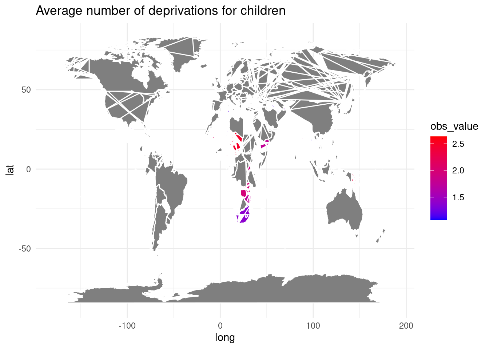
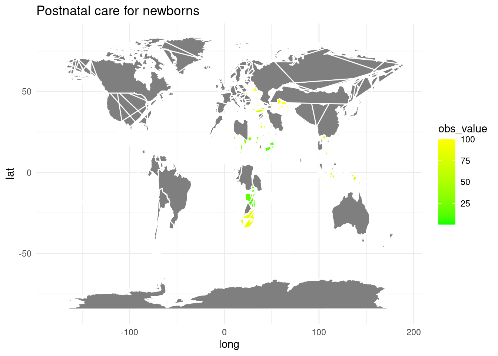
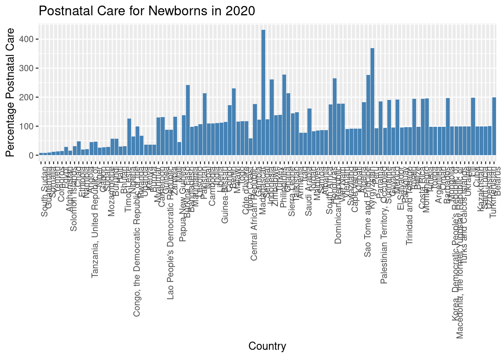
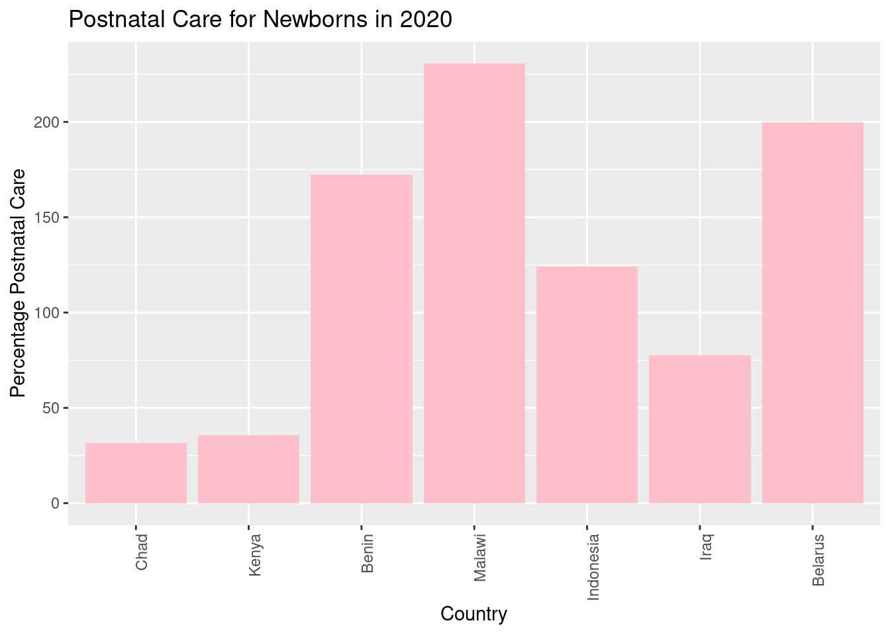
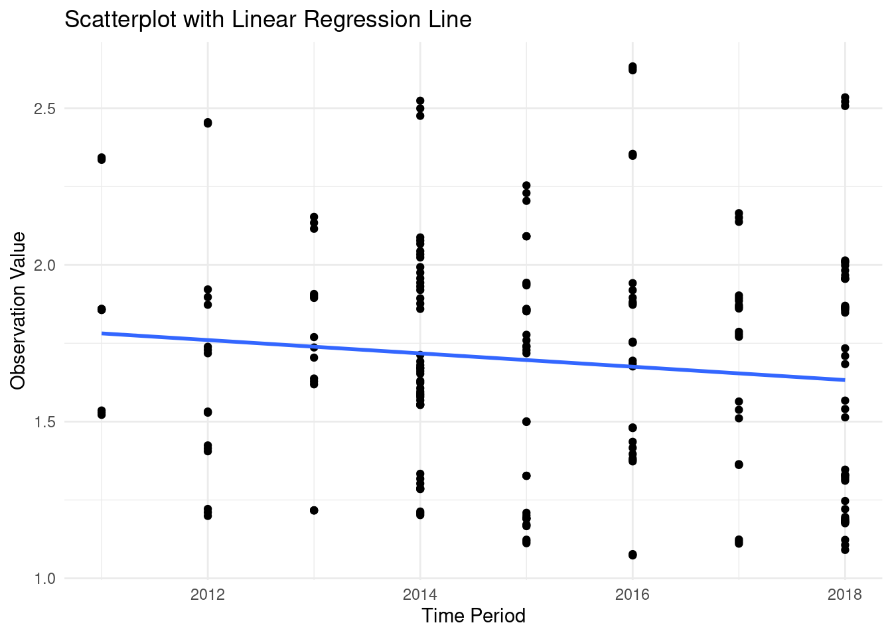
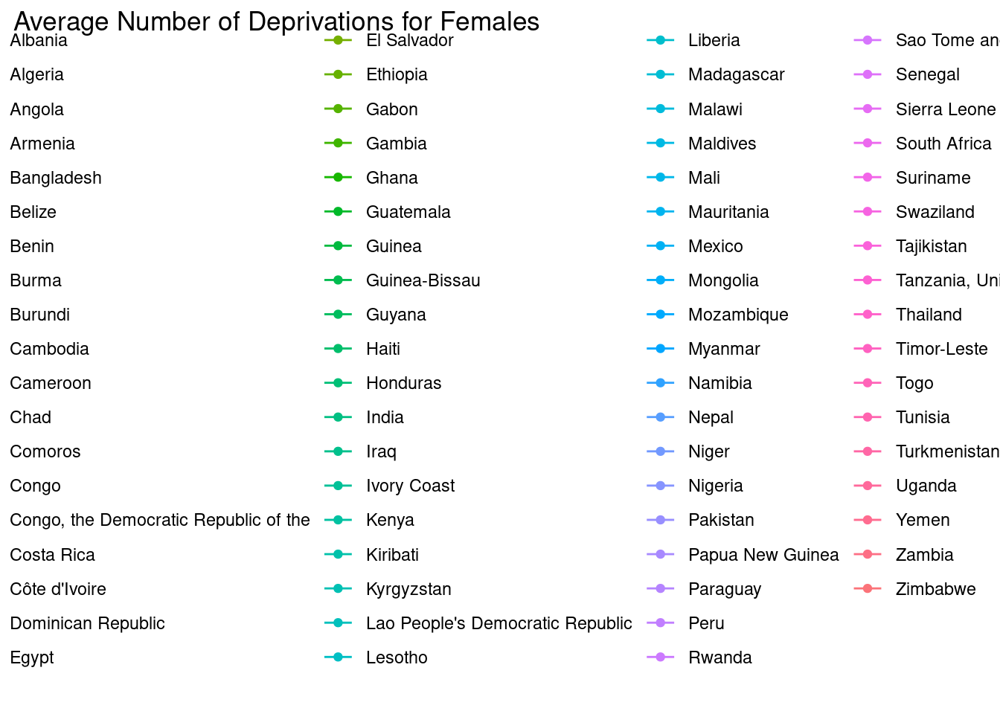
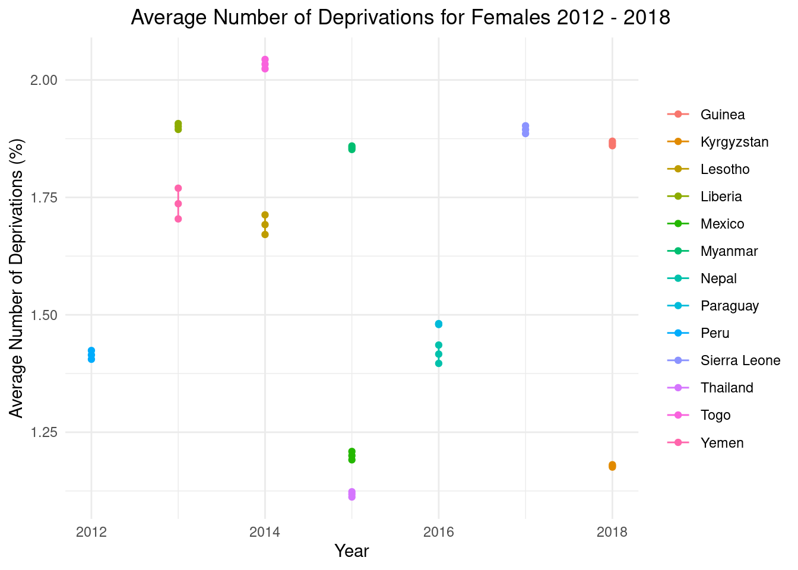

Unicef project
Care for Children
In an ever-evolving global landscape, the well-being of children and newborns stands as a telling indicator of a nation’s developmental progress and its prioritization of future generations. The data harvested from various national surveys and studies provides a window into the lives of these young citizens, offering quantifiable metrics that reflect their health, education, and overall quality of life. The “obs_value” metric emerges as a pivotal point of reference in this context, quantifying the average number of deprivations children face as well as the rate of postnatal care for newborns—key indicators that mirror a society’s capacity to nurture and sustain its youngest members.
From fluctuations in healthcare service delivery to the average number of adversities faced by children, particularly females, these figures paint a detailed portrait of the international stage. They unveil the stark disparities and varied challenges across different regions and time periods, shedding light on the myriad factors that sculpt these outcomes. This introduction sets the stage for a deeper examination of the data at hand, guiding us through a nuanced understanding of how socio-economic factors, policy decisions, and infrastructural adequacy coalesce to influence the delicate early stages of life around the globe.
Third World Countries Maps

2020 Postnatal care results in third world countires


Deprivations of Children from 2012 to 2018

Data on Deprivations of Females


Conclusion
In conclusion, the datasets presented offer a multifaceted perspective on the well-being of children and newborns across the globe. From the aggregated obs values, we glean insights into the intricacies of child deprivations and the effectiveness of postnatal care systems. The data portrays not only the prevalence of adversities and their impact on children segmented by demographics and gender but also the global efforts to enhance early-life healthcare. The figures tell stories of both triumph and challenge: the impressive strides made by some nations in nurturing the health of newborns contrast sharply with the acute needs observed in others. The overarching narrative underscores the importance of sustained and inclusive improvements in economic conditions, education systems, and healthcare frameworks to mitigate the hardships faced by children, particularly females, in diverse socio-economic settings.
As we look at the progression over time, the subtle yet telling trends marked by the linear regression analysis call for careful consideration. While no single factor dictates the observed trends, the interplay of socio-economic and political forces is evident. The continuity of data over years encapsulates not just the ebb and flow of deprivations and healthcare quality but also the resiliency and responsiveness of systems to the needs of the young. The journey towards reducing disparities and improving life outcomes for children and newborns is ongoing, and these datasets serve as crucial beacons, guiding policy, advocacy, and intervention towards a more equitable future.